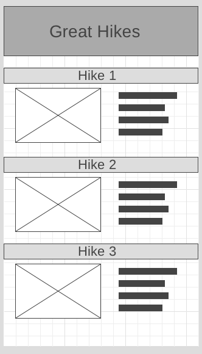

Web Frontend Development II
WDD 330
Ponder: Team Activity: Great Hikes
Overview
This activity will pull several of the topics we have recently discussed together. Objects, modules, organization, along with events and DOM manipulation with Javascript. It has a bit of CSS work thrown in for good measure. The activity will be to re-visit the Great Hikes example to enhance it.
Instructions
Complete the following assignment as a team. Designate one team member as the "main driver" and collaborate on their copy of the code. Everyone on the team should be actively engaged in writing the code and contributing to the solution. Once the solution is working, make sure that everyone on the team gets a copy of the code. Each week let someone else be the "main driver" of the coding.
Core Requirements
-
Take a look at this starter code for a hiking app. It is an example of a small application that takes some data ( in this case an array of objects), and builds out the HTML necessary to display it in the browser. It is simply a collection of functions and variables with no attempt at organization. Since this is a small app we can get away with it, but if it were larger and more complex it could quickly become hard to follow. As complexity increases, code that has no thought towards organization usually turns into 'spaghetti code'.
Think about how you could use modules, objects, or classes to better organize this code. What modules would you need? What objects would make sense? Discuss this with your group.
You might start by making a list of all of the functions and properties you think you will need (look that the code for a starting point!). Notice also the stretch goals below...make sure your pattern will allow for the stretch goals to be completed as well.
The process of evaluating code like we are doing to improve it is called refactoring, and is a pretty common practice. Note that the output of the code should not change...it should accomplish the same thing at the end as it did in the beginning. Only the organization and structure of the code should change to make it more portable, maintainable, reusable, etc.
-
Implement the modules, objects, and/or classes you discussed
above to organize the Hikes code.
Before you do this, compare your plans with this partial solution file. It has a class with methods stubbed out. How does it differ from your plans? Discuss this with your team. You do not need to implement yours exactly like the example...but make sure you understand why each of the properties, methods, and functions are there before continuing.
With either your groups ideas or using the partial solution file above, write the rest of the code to make the application work.
I would recommend a structure similar to the following for your application:
index.html main.js hikes.js styles.cssHere are a few tips/reminders if you need a bit of help getting your module and class connected up and working. Some of these assume that your module looks similar to the example above:
- You will need a main entry point where you will bring in your modules. Create a main.js and add that to your HTML with your script element.
- When using modules you need to tell the HTML file that you want to use modules...
<script src="main.js" type="module"> - You need to import your module before you can use it.
import Hikes from './hikes.js';(This would go in main.js) - If you organized your code using a class that you exported from your module, you need to create an instance of that class before you can use it. You would do this in main.js:
const myHike = new Hikes('hikeListId'); - Once you have your instance, you use it to call the showHikeList method.
myHike.showHikeList()
Alternatively, if you would like to implement this using the MVC (Model, View, Controller) pattern you can follow these instructions to see one implementation of modules, classes and MVC to solve this problem.
-
Style it.
Add the CSS required to make your list of hikes match this wireframe.

Stretch Goals
-
Get the details
When we touch a hike it would be good if it showed us the full details for that hike. Make it so. Replace the list of hikes with a detailed view of one hike.
-
Getting Back to our list
Add a "back" button/link that will take you from the hike details back to the main list.
Instructors Solution
As a part of this team activity, you are expected to look over a solution from the instructor, to compare your approach to that one. One of the questions on the I-Learn submission will ask you to provide insights from this comparison.
Please DO NOT open the solution until you have worked through this activity as a team for the one hour period. At the end of the hour, if you are still struggling with some of the core requirements, you are welcome to view the instructor's solution and use it to help you complete your own code. Even if you use the instructor's code to help you, you are welcome to report that you finished the core requirements, if you code them up yourself.
After working with your team for the one hour activity, click here for the instructor's solution. (Here is the link to the MVC solution)
Submission
When you have finished this activity, please fill out the assessment in I-Learn. You are welcome to complete any additional parts of this activity by yourself or with others after your meeting before submitting the assessment.